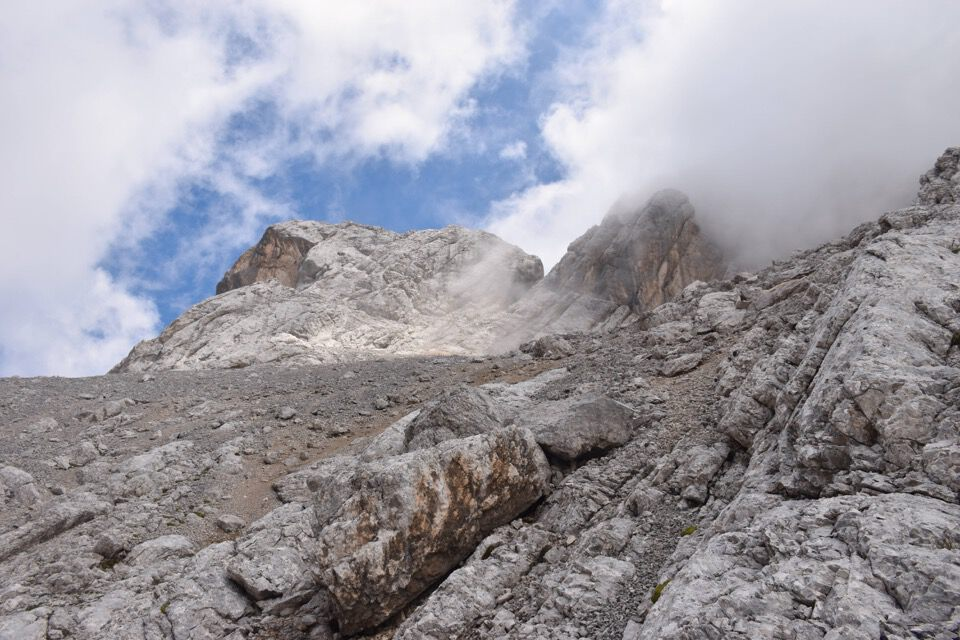

Primo di due giorni passati nelle Marmarole dormendo al bivacco Tiziano.
Per il secondo giorno (Cima del Tiziano e Pala del Meduce) clicca qui.
Dalla val d'Ansiei saliamo verso i Lastoni delle Marmarole.
Splendido il rif. Tiziano!
La conca del rif. Tiziano è di una bellezza superiore.

Il bivacco si apre?
C'inoltriamo nella val Longa: in centro le due cime che desideriamo raggiungere.
Ecco la cima Nord di Vallonga.
Sotto le magnifiche pareti colorate del monte Schiavina.
Iniziamo ad attaccare il monte da Ovest.
Cima del Tiziano e Pala del Meduce, che saliremo il giorno dopo.
In cima alla Vallonga Sud.
Monticello: magnifico, inespugnabile.
Laggiú la cima Nord, ma come ci si arriva? Non abbiamo alcuna informazione!
Proviamo per cresta ma no grazie; in compenso una bella vista della Cima Sud con dietro il Monticello.
Scendiamo e imbocchiamo un canalino per la cima Nord.
Molto frequentata la cima Nord eh!
Torniamo giú verso il bivacco: troppo bella la cima Nord!
I Lastoni delle Marmarole: laggiú la Croda Alta de Somprade.
Monticello, magnifico.
Ultimo sguardo alle Cime di Vallonga, con la Sud avvolta dalle nubi.
Cime di Valtana.